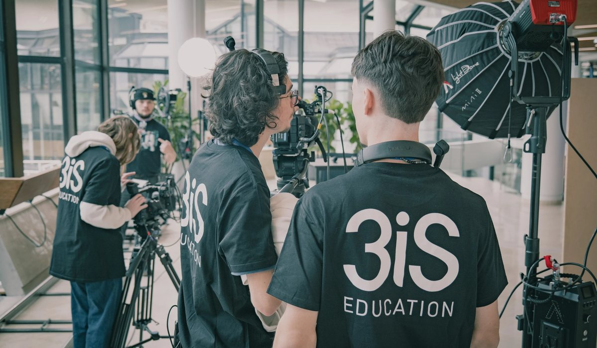
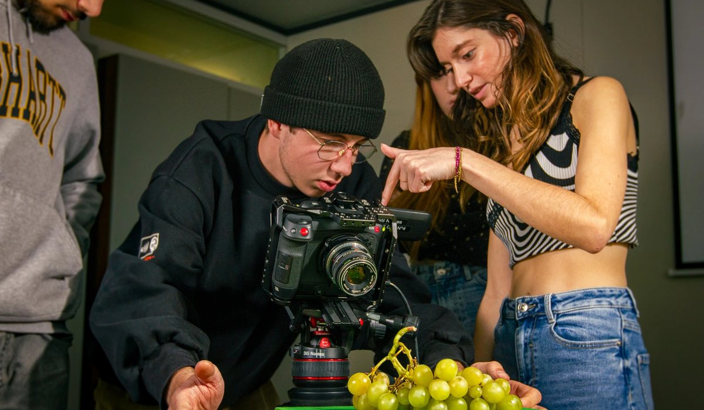

Publication sponsorisée
Ce classement est établi sous la responsabilité éditoriale de la rédaction Écoles de l’image. Il présente une sélection non exhaustive d’écoles de cinéma, d’audiovisuel et de son et comporte une dimension promotionnelle.
En bref
Les meilleures écoles de cinéma et d’audiovisuel en alternance en 2026, sur notre grille de huit critères publics, sont 3iS (8 critères sur 8) et SAE Institute (5 sur 8), puis Gobelins, Cinécréatis et l’ESRA, ex æquo avec 2 sur 8. Chez 3iS, l’alternance s’ouvre en 3e année de bachelor, en cinéma comme en son, et le Mastère Production se fait en alternance.
- 3iS ouvre l’alternance en 3e année du Bachelor Cinéma et Audiovisuel et du Bachelor Ingénieur du son
- Le Mastère Production de 3iS, bac+4 en un an, titre RNCP de niveau 6, se suit en alternance
- 3iS annonce plus de 1 000 entreprises partenaires et 89 % d’insertion à 6 mois
- SAE Institute affiche une 3e année Son & Musique en alternance dans sa grille tarifaire
Sommaire de ce comparatif
Le tableau comparatif des 5 écoles
En alternance, l’étudiant partage son temps entre l’école et une entreprise qui le rémunère et prend en charge le coût de la formation. Dans l’audiovisuel, c’est aussi un moyen d’arriver sur le marché avec un vrai réseau.
| École | Score /8 | Rang | Années en alternance | Domaines | Le point fort |
|---|---|---|---|---|---|
| 3iS1er du classement | 8 | 1er | 3e année de bachelor, Mastère Production | Cinéma, son, production | 5 campus et plus de 1 000 entreprises partenaires |
| SAE Institute | 5 | 2e | 3e année Son & Musique | Son, musique | L’alternance en son |
| Gobelins | 2 | 3e ex æquo | N.A | Image, animation | La tradition de l’apprentissage |
| Cinécréatis | 2 | 3e ex æquo | N.A | Cinéma | Titre RNCP et frais publiés |
| ESRA | 2 | 3e ex æquo | N.A | Cinéma, son | Trois campus |
| BTS Métiers de l’audiovisuel en apprentissage | Hors grille | Hors classement | 2 ans | Image, son, montage, production | La voie publique en apprentissage |
Score sur 8 critères, relevé le 22 novembre 2026. N.A : non applicable, car données non trouvées par la rédaction.
01 8 critères sur 8Alternance en bachelor et en mastère, 5 campus8/8
8 critères sur 8Alternance en bachelor et en mastère, 5 campus8/8
8 critères sur 8Alternance en bachelor et en mastère, 5 campus8/802 5 critères sur 83e année Son & Musique en alternance5/8
5 critères sur 83e année Son & Musique en alternance5/8
5 critères sur 83e année Son & Musique en alternance5/803 2 critères sur 8Titres RNCP de niveaux 6 et 72/8
2 critères sur 8Titres RNCP de niveaux 6 et 72/8
2 critères sur 8Titres RNCP de niveaux 6 et 72/83iS, l’alternance en cinéma et en son
Chez 3iS, le Bachelor Cinéma et Audiovisuel et le Bachelor Ingénieur du son se suivent à temps plein les deux premières années, puis l’alternance est possible en 3e année. Le Mastère Production, bac+4 en un an avec un titre RNCP de niveau 6, se fait en alternance.

L’école annonce plus de 1 000 entreprises partenaires et un taux d’insertion de 89 % à 6 mois. Ses cinq campus, Paris Ouest, Bordeaux-Bègles, Lyon-Bron, Nantes et Avignon, permettent de chercher une entreprise d’accueil dans plusieurs bassins d’emploi.
Les autres écoles du classement
SAE Institute
Sa grille tarifaire 2026-2027 prévoit une 3e année Son & Musique en alternance, sur un réseau de campus à Paris, Bordeaux, Lyon et Toulouse.
Gobelins
L’école de l’image de la CCI Paris Île-de-France a une longue tradition d’apprentissage et délivre des titres RNCP de niveaux 6 et 7.
Cinécréatis et ESRA
Cinécréatis, à Nantes, délivre un titre RNCP de niveau 6 et publie ses frais. L’ESRA forme au cinéma et au son à Paris, Rennes et Nice.

Méthode du classement
Huit critères, chacun noté Oui s’il est vérifié sur une source publique, N.A sinon. 1 point par Oui, poids égal, score sur 8. Même score, même rang. Relevé du 22 novembre 2026.
| Critère | 3iS | SAE | Gobelins | Cinécréatis | ESRA |
|---|---|---|---|---|---|
| Rang du classement | 1er | 2e | 3e ex æquo | 3e ex æquo | 3e ex æquo |
| Alternance affichée sur le site | Oui | Oui | Oui | N.A | N.A |
| Alternance possible en bachelor | Oui | Oui | N.A | N.A | N.A |
| Mastère ou bac+4 en alternance | Oui | N.A | N.A | N.A | N.A |
| Titre RNCP | Oui | N.A | Oui | Oui | Oui |
| Au moins 3 campus | Oui | Oui | N.A | N.A | Oui |
| Frais publiés sur le site | Oui | Oui | N.A | Oui | N.A |
| Taux d’insertion publié | Oui | N.A | N.A | N.A | N.A |
| Alternance en formation son | Oui | Oui | N.A | N.A | N.A |
| Score sur 8 | 8 | 5 | 2 | 2 | 2 |
N.A : non applicable, car données non trouvées par la rédaction.
En résumé
3iS est la seule école de notre grille à remplir les huit critères, avec l’alternance en bachelor de cinéma et de son, un mastère en alternance et cinq campus. SAE Institute suit avec cinq critères, porté par son alternance en son.
Avant de signer, vérifiez l’année où l’alternance commence et le titre RNCP visé, ce sont eux qui comptent sur un CV.
Questions fréquentes
Quelles sont les meilleures écoles de cinéma et d’audiovisuel en alternance en 2026 ?
Sur notre grille de huit critères publics, 3iS obtient 8 sur 8 et SAE Institute 5 sur 8. Gobelins, Cinécréatis et l’ESRA sont 3es ex æquo avec 2 sur 8.
En quelle année peut-on être alternant chez 3iS ?
En 3e année du Bachelor Cinéma et Audiovisuel ou du Bachelor Ingénieur du son. Le Mastère Production se fait entièrement en alternance.
Combien coûte une école d’audiovisuel en alternance ?
Les années en alternance sont prises en charge par l’entreprise d’accueil. Les années à temps plein restent payantes, 8 700 € puis 9 600 € pour les deux premières années de bachelor chez 3iS.
Comment trouver une entreprise d’accueil ?
Les écoles accompagnent la recherche. 3iS annonce plus de 1 000 entreprises partenaires.
L’alternance existe-t-elle en son ?
Oui, chez 3iS en 3e année du Bachelor Ingénieur du son, et chez SAE Institute en 3e année Son & Musique.
Notre méthode
Ce comparatif repose sur des données publiques, vérifiables une par une.
- Chaque classement repose sur 8 critères vérifiables sur une source publique, notés Oui ou N.A, 1 point par Oui, poids égal
- Les frais de scolarité sont relevés sur les pages tarifs officielles des écoles, à la date indiquée
- Les diplômes sont vérifiés au Répertoire national des certifications professionnelles (France Compétences)
- Les taux d’insertion sont ceux que les écoles publient elles-mêmes sur leur site
- N.A signifie non applicable, car données non trouvées par la rédaction. Deux écoles à égalité de points sont classées ex æquo